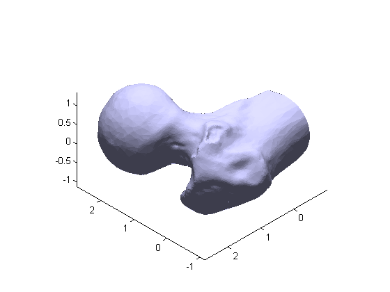

3D Model Demo
This is short demo that loads and renders a 3D model of a human femur. It showcases some of MATLAB's advanced graphics features, including lighting and specular reflectance.
Contents
Load STL mesh
Stereolithography (STL) files are a common format for storing mesh data. STL meshes are simply a collection of triangular faces. This type of model is very suitable for use with MATLAB's PATCH graphics object.
% Import an STL mesh, returning a PATCH-compatible face-vertex structure fv = stlread('femur.stl');
Render
The model is rendered with a PATCH graphics object. We also add some dynamic lighting, and adjust the material properties to change the specular highlighting.
patch(fv,'FaceColor', [0.8 0.8 1.0], ... 'EdgeColor', 'none', ... 'FaceLighting', 'gouraud', ... 'AmbientStrength', 0.15); % Add a camera light, and tone down the specular highlighting camlight('headlight'); material('dull'); % Fix the axes scaling, and set a nice view angle axis('image'); view([-135 35]);